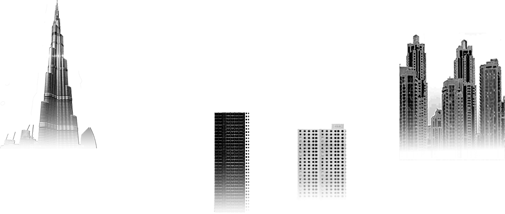
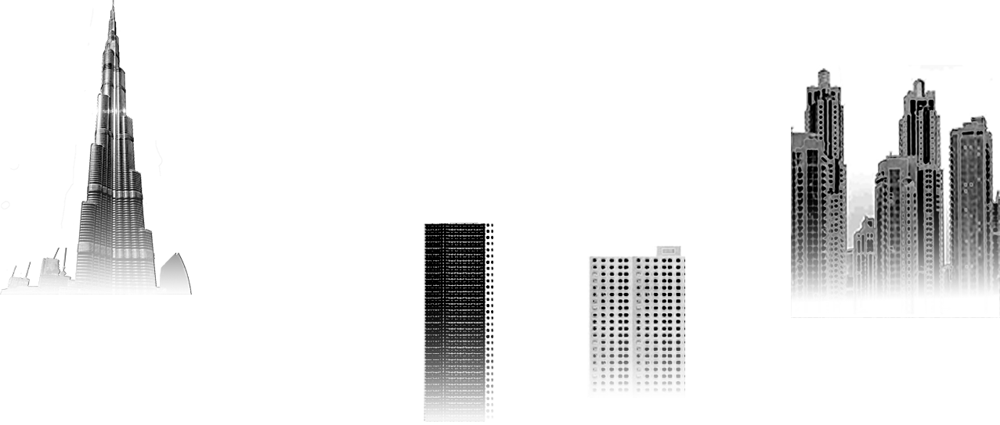
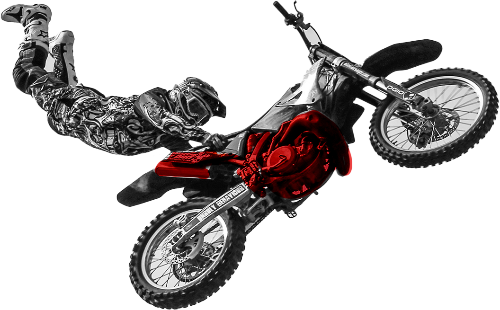
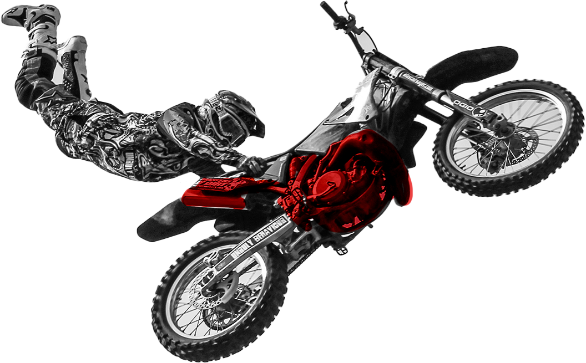
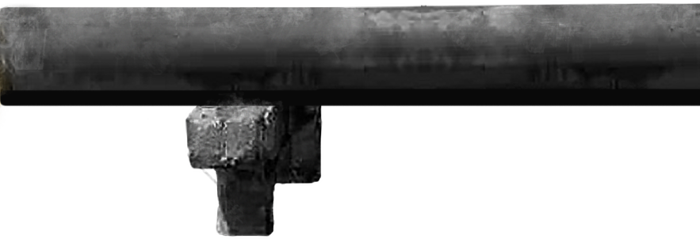
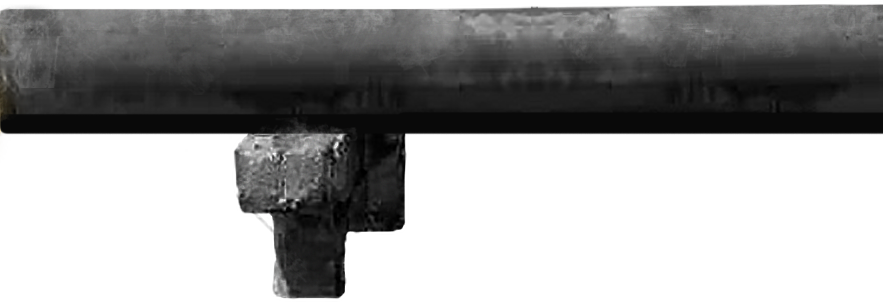

การก่อสร้างของคุณ
กำลังก่อมลพิษเรื่องอยู่หรือไม่


 



เรื่องของอากาศ
แน่นอนเราหมายถึง...ฝุ่นก่อสร้าง
เรารู้ว่ามันเป็นเรื่องยากที่จะควบคุมไม่ให้เกิดขึ้นได้
เพราะงานก่อสร้างต้องทำการ ขุด ตอก เจาะ ทุบ ขั้นตอนต่าง ๆ ของงานก่อสร้าง
เกิดผลกระทบต่อบริเวณใกล้เคียงอย่างมาก
และส่วนใหญ่ งานก่อสร้างก็ใช้ระยะเวลานาน
จึงเป็นหนึ่งในต้นเหตุที่ทำให้เกิดฝุ่นละออง pm 2.5
และ “มลพิษทางอากาศ”
เพราะงานก่อสร้างต้องทำการ ขุด ตอก เจาะ ทุบ ขั้นตอนต่าง ๆ ของงานก่อสร้าง
เกิดผลกระทบต่อบริเวณใกล้เคียงอย่างมาก
และส่วนใหญ่ งานก่อสร้างก็ใช้ระยะเวลานาน
จึงเป็นหนึ่งในต้นเหตุที่ทำให้เกิดฝุ่นละออง pm 2.5
และ “มลพิษทางอากาศ”


 



 
